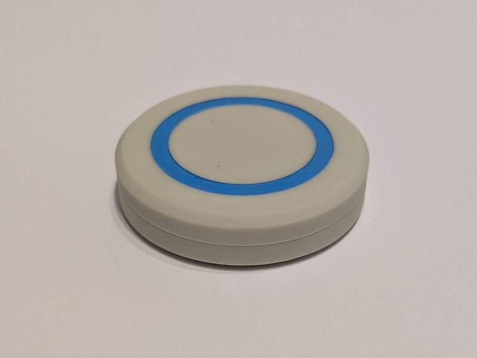
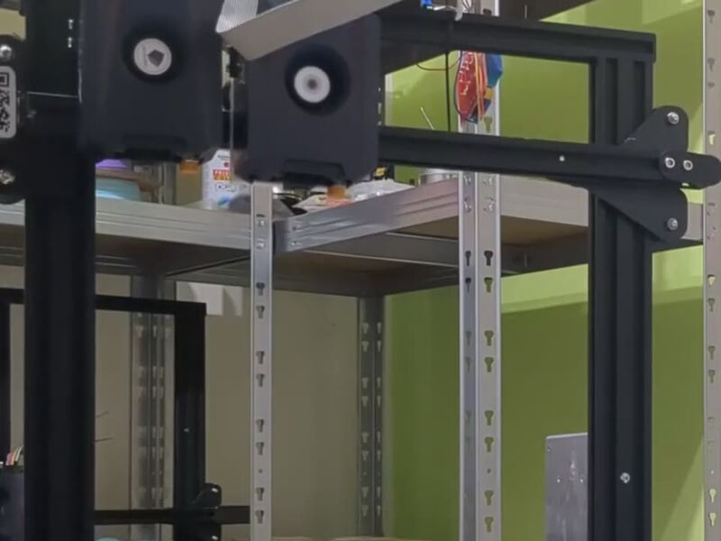
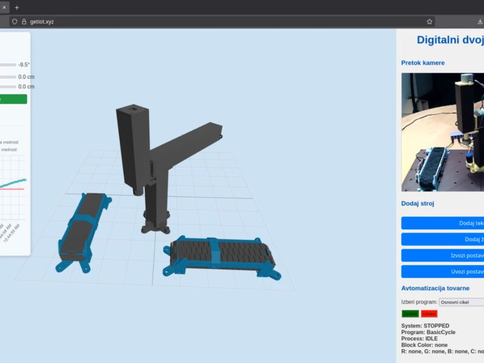
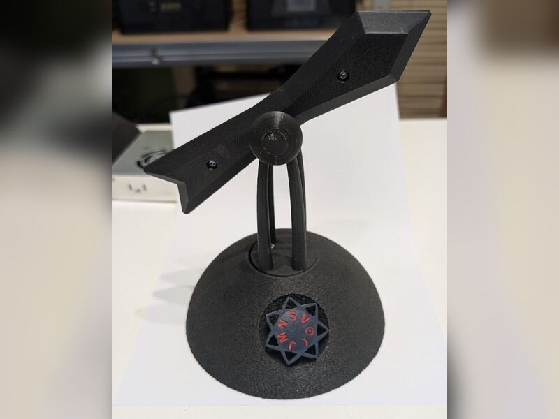
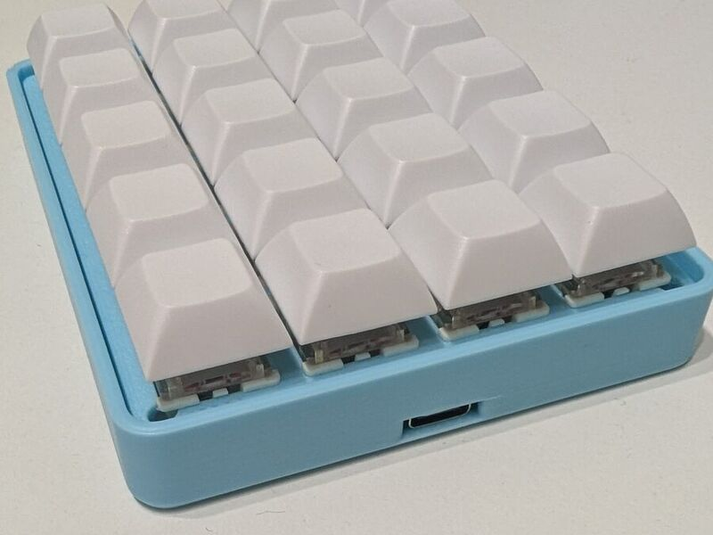
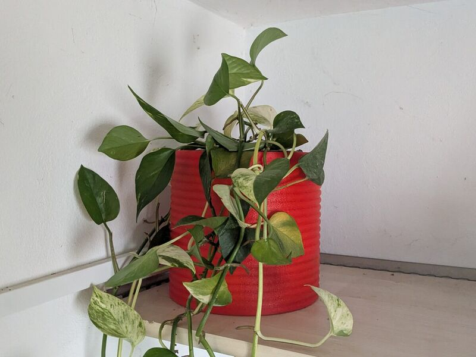
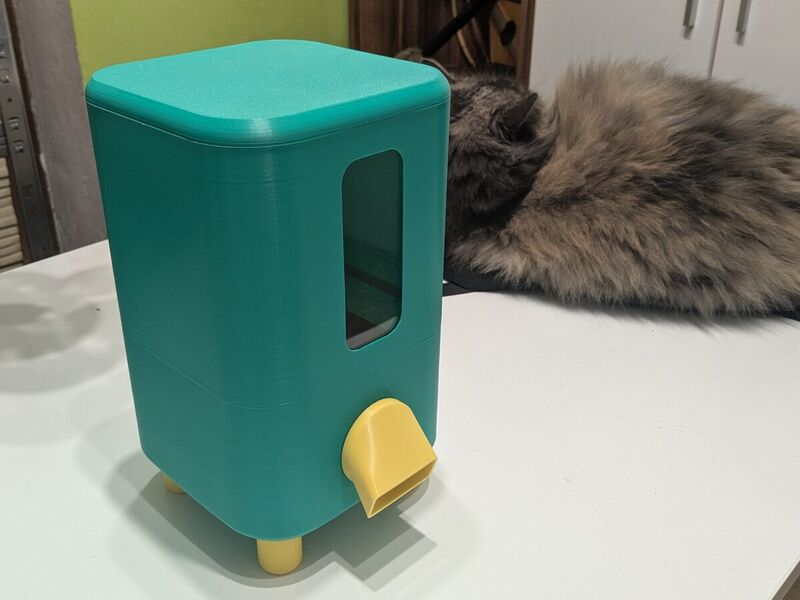
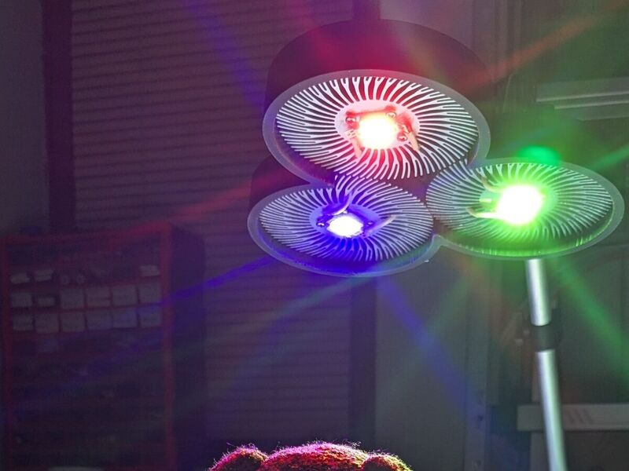
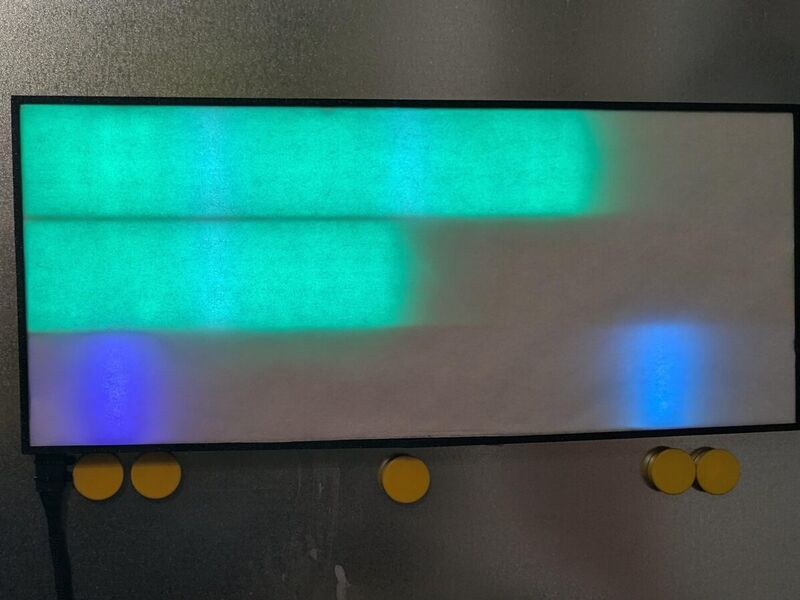

From idea to working prototype.
I design and build physical prototypes: mechanics in Fusion 360, PCBs in KiCad and EasyEDA, electronics with sensors and motors, and microcontroller firmware. I like work where mechanics, electronics and software meet, and I iterate until the system works reliably. I am a Master's student at the Faculty of Organizational Sciences (University of Maribor).
Projects

Flip the coin and your computer and phone switch into work mode. My own 30 mm PCB, assembled and brought up by me, BLE, and Linux and Android apps.
KiCadEFR32BG22nRF52840LIS2DW12BLESWDresin 3D printing

An Ender 3 Max converted to swap print heads automatically (Klipper). The prototype completed about 9 out of 10 tool changes.
Fusion 360Klipper3D printing

Bachelor's thesis: a miniature factory with a 3D-printed crane, two conveyor belts and colour sorting, controlled in real time over MQTT from a Raspberry Pi and a Node.js dashboard with a 3D view.
Fusion 3603D printingmicrocontrollersRaspberry PiMQTTNode.jsThree.js

A two-axis pointer that computes a planet's position from GPS location and time, then points at it in closed loop (ESP32, compass, IMU).
ESP32-C3GPScompassIMUDC motorsPlatformIO3D printing

A 20-key keyboard: custom PCB with an ATmega32u4 and USB-C, QMK firmware and a 3D-printed case.
KiCadEasyEDAATmega32u4QMKJLCPCB3D printing

Automatic watering with an ESP32 and ESPHome: measures soil moisture and water level, waters only when needed and sleeps between readings. The new version has a custom PCB with an 18650 battery.
ESP32-C3ESPHomeHome AssistantKiCadFusion 3603D printing

Dispenses a portion of kibble at set times through a 3D-printed auger. An ESP32 with an RTC module keeps it working without internet.
ESP32RTCstepper motorC++Fusion 3603D printing

A lamp with separate red, green and blue light sources that cast multi-coloured shadows. 3D-printed base filled with concrete.
Fusion 3603D printingRGB LEDsconcrete

Earlier macro keyboards, an RP2040 game controller and an LED clock that shows events from Google Calendar.
RP2040GP2040-CEESP32LED stripsGoogle Calendar API
Get in touch
I am looking for student work or an internship in R&D, prototyping, robotics or mechatronics, in Slovenia or abroad. Email or phone is the quickest way to reach me.
-
Location
Ljubljana, Slovenia
-
Phone
+386 69 634 660
-
E-mail
jon@tepes.info